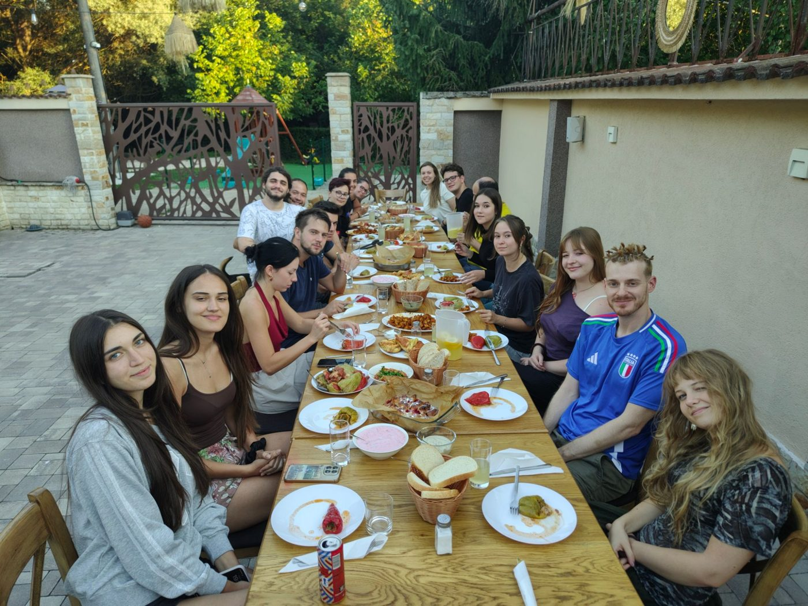
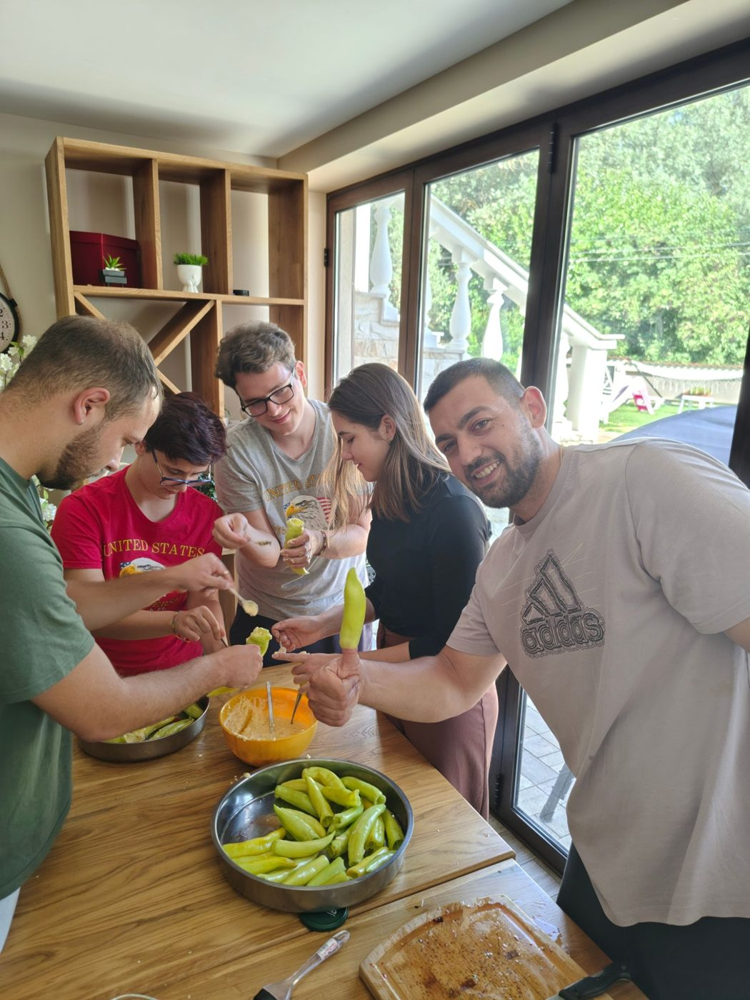
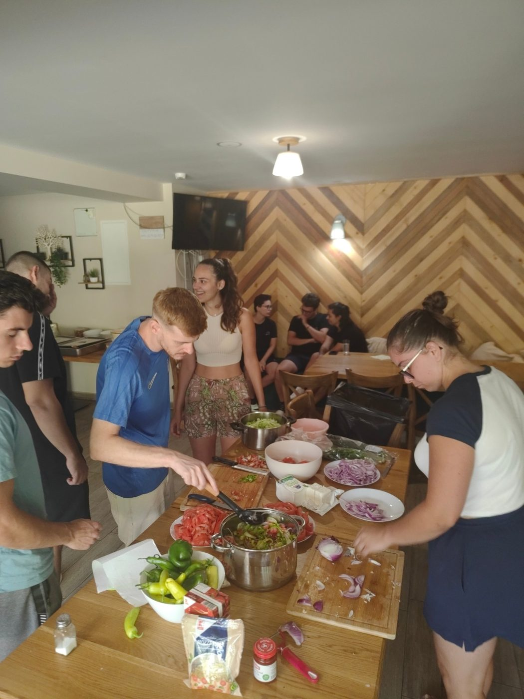

"A Taste of Europe" was an Erasmus+ training course that brought youth workers from Bulgaria, Romania, Poland, Slovakia and Greece to Stara Zagora to explore cooking as a tool for intercultural learning. The idea behind the project was that food opens a window onto a country's history, values and everyday life, and that cooking together can be a practical, inclusive way for youth workers to run intercultural activities with young people.
The course began on 11 August with team-building games, an introduction to the project's objectives, and the first planning of the menus for the cooking days ahead.

On day two, national teams finalised their menus, workshop methodologies, ingredient and shopping lists using a shared template. This template became the basis of the project's main result, a Guide on Cooking for Youth Workers. After a group shopping trip, the Greek team opened the series of cooking workshops with a presentation on Greek cuisine, culture and history. Participants then split into four teams at different cooking stations, rotating so that each team prepared a dish at every station. The day ended with a dinner prepared together under the Greek team's guidance and a Greek cultural evening with traditional dances and songs.
Day three took the group out of the kitchen and into Stara Zagora. Participants visited local museums, walked through the city centre, saw the Roman forum and historical monuments, and spoke with local people to learn more about Bulgarian culture, history and daily life.
On day four, participants continued work on the cooking guidebooks, finalising the methodologies that will help facilitators run similar workshops in the future. In the afternoon the Slovak team led the workshop. In international teams across several stations, the group prepared chicken breast baked with apricot, cheese and rice, cucumber salad, fried cheese with fries and tartar sauce as a vegetarian option, and smotanová torta, a sour cream cake. The evening continued with Slovak dances, songs and games.


Day five began with a review of what participants had learned in the Slovak workshop, putting the methodology into practice. Then the Polish team presented Polish culture and history and showed how centuries of tradition have shaped the country's cuisine. The afternoon workshop covered borscht, handmade pierogi and cakes, all prepared together at the international stations.